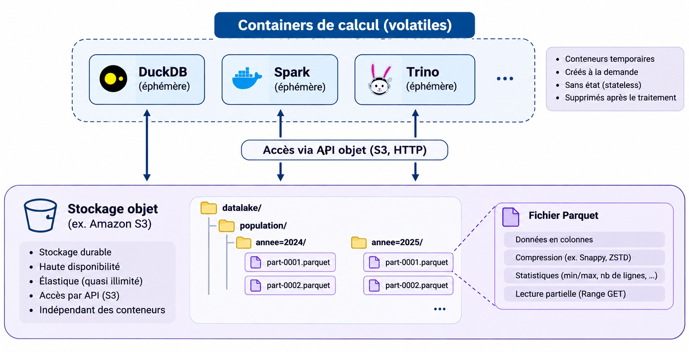
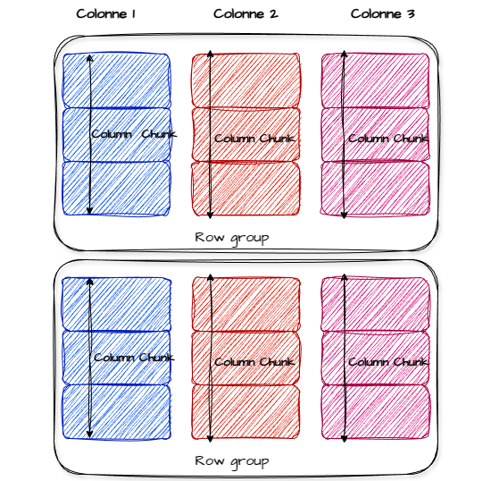
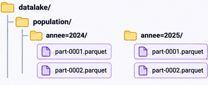
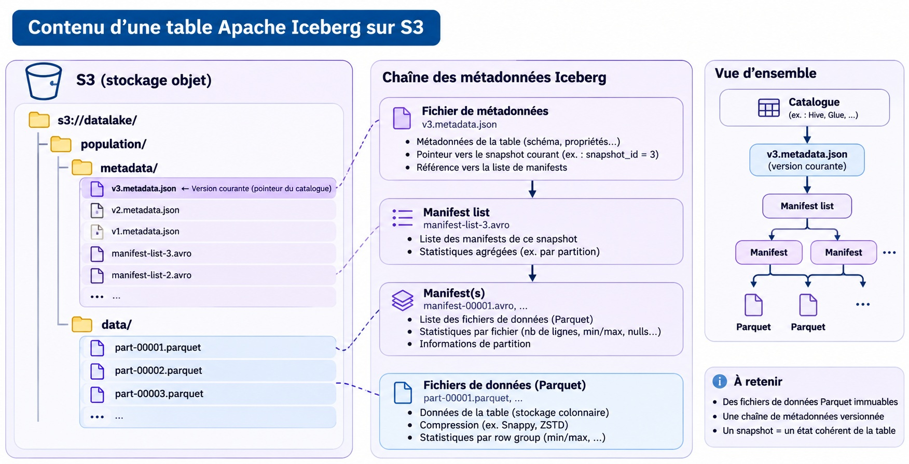
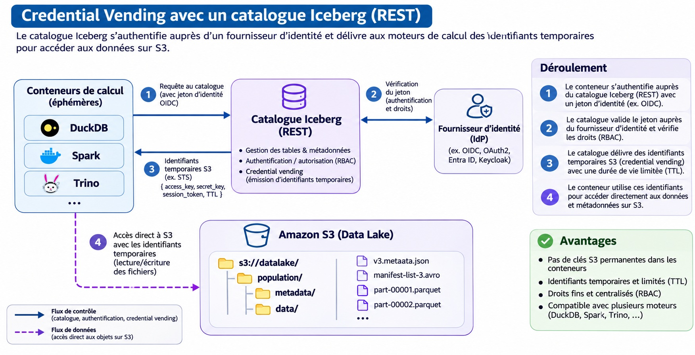

S3 et Iceberg, une façon moderne de gérer et de consommer la donnée
Ines Hiverlet
2026-11-12
Une architecture data

Le format de fichier parquet
2013 - ecosystème big data (hadoop)
format de fichier orienté colonnes
compressé
row group
Métadonnées, statistiques

Le format de fichier parquet
predicate pushdown
partitionnement
requêtes range

S3 - stockage objet
Un protocole qui implémente les principes du stockage objet Serveur s3 + bucket + path (objet) : https://minio.lab.sspcloud.fr/donnees-insee/diffusion/RP/2017/individu_reg/individu_reg.parquet
Stockage centralisé : découplage du stockage et des moteurs de calcul
Une inversion du paradigme
la liste des ressources accessibles est aggrégée dans une policy attribuée à un rôle
Sur un partage de fichiers les droits sont au niveau de chaque dossier / fichiers
=> la policy aggrégée est sensible
=> permet de cartographier l’usage des données
Des limites
- Pas d’écriture aléatoire
- Pas d’atomicité sur les fichiers
Iceberg
Apache Iceberg est un format de table ouvert (2017)
Rappel:
- Parquet : le format des données
- S3 : le stockage physique
- Iceberg : le format de table et ses métadonnées
Iceberg

Des apports
Transactions ACID
Snapshots
Time Travel
Évolution du schéma
Partitionnement évolutif : Modification de la stratégie de partitionnement sans réorganiser immédiatement tous les fichiers
Optimisation des lectures : Utilisation des statistiques des manifests pour éviter de lire des fichiers inutiles
Interopérabilité
Iceberg rest api
Apparu il y a 2 ans

Le catalogue
pointe vers le fichier de metadonnées à jour et assure la cohérence en cas d’accès concurrent
une couche d’abstraction au stockage grâce au credential vending
Chaque client iceberg fait sa demande d’accès au catalogue, système d’habilitation propre au catalogue et de fourniture de token S3 et de cible (serveur S3 + bucket + path ) pour accéder à la donnée
L’utilisateur n’a pas de droit en propre sur S3 , il les obtient dynamiquement par le biais du serveur de catalogue qui utilise AssumeRole et peut ajouter une policy restrictive